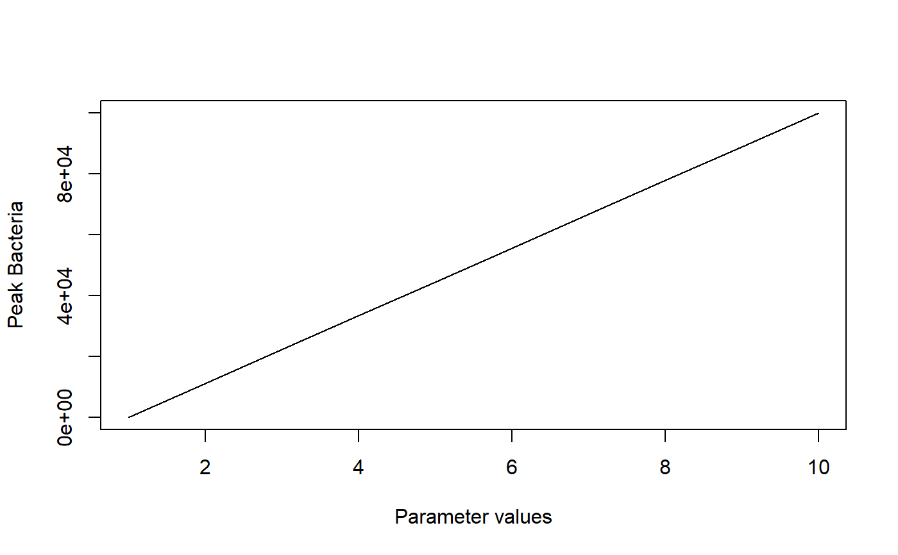

R/simulate_modelexploration.R
simulate_modelexploration.RdThis function simulates the simple bacteria model for a range of parameters. The function returns a data frame containing the parameter that has been varied and the outcomes (see details).
simulate_modelexploration(B0 = 10, I0 = 1, tmax = 30, g = 1, Bmax = 1e+06, dB = 0.1, k = 1e-07, r = 0.001, dI = 1, samplepar = "k", pmin = 1e-08, pmax = 1e-05, samples = 10, pardist = "lin")
| B0 | initial number of bacteria |
|---|---|
| I0 | initial number/strength of immune response |
| tmax | maximum simulation time, units depend on choice of units for your parameters |
| g | rate of bacteria growth |
| Bmax | carrying capacity for bacteria |
| dB | death rate of bacteria |
| k | rate at which bacteria are killed by immune response |
| r | rate at which immune response is induced by bacteria |
| dI | death rate of immune response |
| samplepar | name of parameter to be varied |
| pmin | lower value for varied parameter |
| pmax | upper value for varied parameter |
| samples | number of values to run between pmin and pmax |
| pardist | spacing of parameter values, can be either 'lin' or 'log' |
The function returns the output as a list, list element 'dat' contains the data frame with results of interest. The first column is called xvals and contains the values of the parameter that has been varied as specified by 'samplepar'. The remaining columns contain peak and steady state values of bacteria and immune response, Bpeak, Ipeak, Bsteady and Isteady. A final boolean variable 'nosteady' is returned for each simulation. It is TRUE if the simulation did not reach steady state, otherwise FALSE.
A simple 2 compartment ODE model (the simple bacteria model introduced in the app of that name) is simulated for different parameter values. The user can specify which parameter is sampled, and the simulation returns for each parameter sample the peak and final value for B and I. Also returned is the varied parameter and an indicator if steady state was reached.
This function does not perform any error checking. So if you try to do something nonsensical (e.g. specify negative parameter values or fractions > 1), the code will likely abort with an error message.
See the shiny app documentation corresponding to this simulator function for more details on this model.
# To run the simulation with default parameters just call the function: res <- simulate_modelexploration() # To choose parameter values other than the standard one, specify them, like such: res <- simulate_modelexploration(dI = 0.1, r = 10, tmax = 100) # You should then use the simulation result returned from the function, like this: plot(res$dat[,"xvals"],res$data[,"Bpeak"],xlab='Parameter values',ylab='Peak Bacteria',type='l')